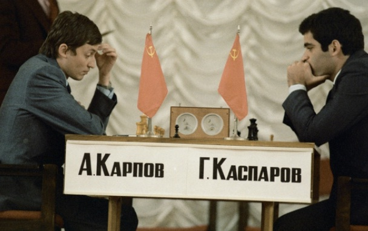
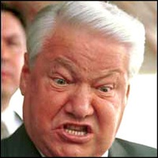

|
Трубицын В. Платье
голого короля? Вуаля!
Рецензия
на книгу жизни
Каспарова.
Давно
мне не приходилось читать столь утомительной книги, как книгу Гарри
Каспарова «Шахматы как модель жизни» –
М, 2007, 350 с. Весьма утомительное чтение
труда, написанного, вероятно, целой бригадой варягов.
И жанр которого не поддаётся определению.
Тут
и исторический обзор биографий его великих предшественников,
рассыпанный широким жестом по всему содержанию, и непременное
упоминание великих исторических деятелей в цитатах к месту и не к
месту, и фрагменты биографии Каспарова на их фоне, и множество
материалов об особенностях спортивных баталий за шахматной доской (но
без приведения записи хотя бы одной партии или цитируемого
фрагмента), и постоянные потуги провести аналогии между шахматами и
бизнесом – снова бессистемные и недоказуемые, без чёткой
архитектуры книги, с многочисленными повторами, в менторском тоне с
позиции гуру, обладающего высшей истиной. М-да…
Нет
слов – Каспаров является выдающимся спортсменом, шестикратным
чемпионом мира по шахматам, восьмикратным олимпийским чемпионом,
обладателем наивысшего рейтинга и т.д. и т.п. Но не писателем. Его
книга без адреса: для всех – и не для кого. Специалистам она
кажется сумбурной беллетристикой, широкому читателю –
пухлым фолиантом без ясного сюжета и содержания. Что это? То ли
настольный календарь ко дню рождения, то ли пародия на библию.
Очень
жаль, что я быстро не смог найти в своём архиве блестящую рецензию на
книгу якобы Каспарова недавно ушедшего от нас выдающегося питерского
критика Виктора Топорова. А там всё сказано. Хотя Топоров и не был
специалистом в шахматах, но он быстро разобрался в слабостях этой
претенциозной книги как опытный литератор. Более того –
он посмеялся и над тем, что если Каспаров и давал на Западе лекции
для западной элиты за звонкую валюту о применении шахматных стратегий
в бизнесе, то сам оказался никудышним бизнесменом и успешно провалил
все свои бизнес-проекты. Тут мы зрим явный нонсес.
Ещё
более поразителен тот факт, что Каспаров писал свою книгу,
претендующую на то, чтобы доказать влияние шахмат на организацию
бизнеса, на 12 лет позже блестящей книги Ясууки Миуры о влиянии
стратегии Го на многие аспекты современного мироустройства (см.
рецензию на нашем сайте). Ведь Миура в предисловии к русскому изданию
не забыл упомянуть имя Каспарова в знак уважения к нашему великому
чемпиону. Где же ответный жест?
Отдельная
тема – уход Каспарова в политику. Это был ещё один его полный
провал. Созданное им движение гражданских инициатив ОГФ быстро
оказалось в рядах пятой колонны и не получило широкой поддержки
дальше столичных тусовок «офисных хомячков» и
«несогласных» в норковых шубках. В то время как их лидер,
обитающий в основном в заграничных апартаментах, открыто призывал США
действовать с позиции силы в отношении путинской России.
Остаётся
признать, что Гарри был гением только лишь в одной области – за
что мы ему и благодарны. Для любого человека этого вполне достаточно.
Если не считать того, что и в его единственной вотчине – в
шахматах – нашёлся
человек, который и там уронил его с пьедестала безо всяких усилий.
Просто с помощью листка бумаги и циркуля. Взял и доказал, что Гарри
Кимович мало смыслит даже в той игре, которой занимался всю жизнь.
Я бы на его месте обиделся. Если он,
разумеется, джентльмен. Вам в лицо брошена перчатка – так
поднимите её, гордый сын гор! Ответьте по существу – а не
прячьтесь в свои мерседесы и загородные дворцы. Речь, конечно, идёт о
его презрительном отношении к более общему подходу в теории шахмат,
отражённому в материалах нашего сайта. Я лично попросил его о
контактах во время его визита в Питер хотя бы через его секретаря. Но
мэтр презрительно окинул меня взглядом, даже не спросив – чего
же я хочу. Ну что ж, это для гения простительно, ведь у него в жизни
– сплошно цейтнот… Но за 10 лет можно было зайти хотя бы
на сайт, где утверждается, что в России разгадана тайна шахмат?
Линдер и Авербах вели себя совсем иначе и с удовольствием
сотрудничали с нашим сайтом. Ботвинник, правда, отказался по
телефону, сославшись на весьма преклонный возраст. А Юдасин –
истинный поэт шахмат –
долго общался со мной из США на латинице по сети. Не говоря уже о
другом российском американце Нудельмане, давно сотрудничающем с нашим
сайтом. А тут свой в доску земляк ведёт себя как павлин –
почему?
А
теперь замечания по тексту.
Всё
же прав был Миура, обвиняя шахматы в агрессивной эстетике. Вот лишь
некоторые цитаты из книги Каспарова: «Я… заставил себя
подготовиться к войне на истощение сил»
– о матче с Карповым.
«И тут Карпов нарушил непреложный закон борьбы –
противника надо добивать».
Тем более, что он хотел «надолго вывести из строя опасного
конкурента»… «сотни людей выстраивались в очередь
за билетами в Колонный зал. Это было похоже на стремление попасть
на казнь – вот только жертва отказывалась умирать».
(Речь идёт о безлимитном матче за мировую корону в 1984-1985 годах).
«я… даже снял для верности
пиджак (как в песне
Высоцкого)… в
цейтноте у него (у Карпова) дрожали руки…»
На
пятом месяце матча счёт стал 5 : 3 в пользу претендента Каспарова и
«почва под ногами чемпиона заколебалась. Шахматные руководители
неожиданно оказались перед пугающей перспективой моего конечного
успеха в матче: «труп» (Каспаров) не только ожил, но
начал подниматься на ноги! Рисковать они не могли. Доску с фигурками
убрали в сторону – это было уже ни к чему: начиналась другая
игра. События приобрели неожиданный и скандальный оборот». Хотя
независимому читателю не совсем понятна подоплёка тогдашних событий:
ведь оба спортсмена были советскими шахматистами. Далее матч был
прекращён, а «тоталитарный дух той эпохи» навсегда
сохранился в памяти Каспарова.

Затем
Каспаров даёт весьма оригинальную характеристику стиля игры Карпова,
сравнивая его с удавом,
удушающим своего противника в неторопливой позиционной борьбе. А его
противник, по словам Таля, начинает прозревать лишь тогда, когда
сопротивление уже бесполезно. Что происходит, видимо, уже в момент
заглатывания удавом своей добычи. Впечатляющей жертвой Карпова-удава
стал, как известно, гроссмейстер Андрей Соколов. Как и Гата Камский.
Вот такие жуткие картинки рисуют о своих повадках сами гроссмейстеры.
В другом месте Каспаров о Мовсесяне сказал, что «этот турист
наверняка собирался получить мой скальп».
Или: «Европейское турне Морфи можно сравнить с историей великих
завоевательных походов». «Стейниц… вступил в битву
за первый официальный титул чемпиона мира». «И тут
мастера позиционной игры наносят свои смертельные удары». Шорт:
«Шахматы безжалостны – вы должны быть готовы стать
киллером». Что
по сути и произошло в буквальном смысле (!) с Ботвинником на его пути
к мировой короне (см. статьи Валерия Чащихина на нашем сайте).
Листаем
книгу дальше. И вот –
возвышенный стиль… по поводу своей же ограниченности. Им была
найдена подходящая цитата у Цвейга: Шахматная игра, ставшая символом
интеллектуальной деятельности, «выдержала испытанием временем
лучше, чем все книги и творения людей (!?), это единственная игра,
которая принадлежит всем народам и всем эпохам (?), и никому не
известно имя божества, принесшего её на землю, чтобы рассеивать
скуку, изощрять ум, ободрять душу». Какая изысканная чушь! И
какое презрение к творческим способностям человека. Хотя мы давно
знаем, что не боги горшки обжигают, а мы сами. Например, изобретатели
шахмат.
А
вот уже и элементарная безграмотность Каспарова в попытке внести свой
вклад в историю шахмат. Ведь он заявил: «…современные
шахматы возникли в конце XV
века в Средиземноморье и являются чисто европейским изобретением».
Потому что «… европейцам «индийская» версия
шахмат стала известна лишь в конце XVII
века». Что является полной чушью. Линдер пишет: «Уже в
раннем средневековье –
в VIII
- IX
веках от арабов заимствовали шахматы некоторые европейские страны. В
Западной Европе это были Испания и Италия. Позднее, в X
- XII
веках, игра становится известна во Франции, Англии, Германии…».
У Гарри ошибочка на тысячу лет? Карпов в истории шахмат был на три
головы выше Каспарова, став редактором первой большой российской
шахматной энциклопедии ШАХМАТЫ, вышедшей в свет в 1990 году.
У
Каспарова хватило мужества признать, что он допустил ошибку,
поддерживая Ельцина на президентских выборах в 1996 году. Хотя тогда
и многие думающие люди в России согласились играть в эту циничную
игру, позабыв, что демократические процедуры
важнее персоналий.

В
оценке главной пружины Второй мировой войну у Каспарова на первый
взгляд возникает прозрение, когда он цитирует позицию советских
учебников истории, разоблачающих двойную игру Запада,
заинтересованного в ослаблении и СССР, и Германии – главных
своих конкурентов на мировой арене. Но тут же с помощью своего дяди,
своего дедушки Моисея Вайнштейна и Черчилля наш гуру полностью
снимает с себя одежды великого факира и пророка, оставаясь в чём мама
родила. И становится на позицию ярого антикоммуниста, приветствуя
крушение СССР. Свой пассаж Гарри заканчивает цитатой Черчилля из
«великой Фултонской речи» 1946 года, утверждающей самую
великую ложь новейшего времени о том, что именно англосаксы должны
взять на себя заботу об «обеспечении безопасности и
благоденствия, свободы и процветания всех мужчин и всех женщин во
всех домах и во всех семьях на всей земле». За прошедшие 58 лет
с тех пор можно подвести итог упомянутого благоденствия на всей
планете, являющегося лишь заботой Атлантического союза за мировое
господство. А Гарри в итоге предал обоих своих дедов-коммунистов,
которые видно мало его секли, когда он умещался поперёк лавки.
Примечательно,
что Каспаров обратил внимание на такую особенность шахмат, которая
состоит в преимуществе первого хода белых, выигрывающих тем самым
«время на доске». Ведь оно ничем не компенсируется в
одной партии, что невозможно представить, например, в Го. То есть для
выяснения относительной силы игроков необходимо всегда дать им
возможность сыграть чётное количество партий с переменой цвета. А
относительную ценность самих фигур и ходов можно определить лишь в
зависимости от конкретной позиции. Примечательно и обладание
«господствующей высотой», то есть центром доски. (Тарраш:
конь, стоящий на краю – позор на голову твою!). Но гоняясь за
эффектными аналогами между реальными сражениями и шахматной игрой,
Каспаров всё же вынужден был признать, что современная война
неузнаваемо изменилась. И как говорил Ю.Филатов (отец российского
Го), она стала походить больше на Го, чем на шахматы. За что и
поплатился, перечеркнув тем самым возможность издать первую книгу о
Го на русском языке. Советская цензура даже в этом сравнении увидела
слишком много откровений в свой адрес, хотя речь шла о свойствах Го
вообще без указания возможного агрессора.
А
вот и кредо Каспарова: «Пока мы продолжаем оказывать давление и
создавать угрозы – мы владеем инициативой. В шахматах это может
привести к неотразимой атаке. В бизнесе – к захвату большей
доли рынка. … В политике – к повышению рейтинга».
Что ж – для игры за
доской – это понятно. Но не были ли Бжезинский и Обама
слушателями каспаровских лекций? Как -то странно упомянутая выше
мораль в шахматах и электронных стрелялках становится реальностью
там, где сегодня гибнут люди. И впереди неё скачет Гаррик на белом
коне? Или в четвёрке конников Апокалипсиса?
Ещё
об одной щекотливой теме – коммерциализации шахмат –
Каспаров по сути ничего интересного так и не сказал: у самого рыльце в
пуху… А ведь это – одна из главных причин смерти и
любительских шахмат, и широкой сети шахматных клубов. Гораздо
интереснее его рассуждения о проблеме компьютер-человек. В широко
разрекламированных его матчах с Deep
Blue
с двумя стами миллионов позиций в секунду (где якобы решалась судьба
человечества, а не проблемы взаимного пиара вместе с компанией IBM)
до сих пор остаётся немало тайн. Ведь многомиллионный проект IBM
по признанию самого Каспарова «был закрыт –
в 1997 году – без
проведения научной экспертизы, подтверждающей чистоту
эксперимента и достоверность выводов. О воспроизводимости результатов
говорить уже не приходится».
В
короткой заметке о глобализме Каспаров лишь упомянул о взаимосвязи
всех событий на Земле да посоветовал в качестве главного козыря в
борьбе с терроризмом всем отказаться от потребления нефти буквально в
следующую пятницу. Спасибо хоть за этот анекдот. Ничего другого от
человека, абсолютно не владеющего многосторонними стратегиями, я и не
ожидал.
10.06.2014
В
Праздник великой воды на всей территории России.
|